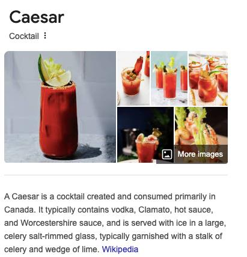

Investigating the Canadian prank that's been fooling the world since the 20th century.
The Caesar cocktail, a drink allegedly created in Canada in 1969, has been the subject of much debate. With its bizarre combination of vodka, Clamato juice (a mix of clam and tomato juices), hot sauce, Worcestershire sauce, and a celery garnish, it has baffled culinary experts and sceptics alike. In this article, we examine the evidence suggesting that the Caesar cocktail is not a legitimate beverage but rather an elaborate prank devised by Canadians to amuse themselves at the expense of unsuspecting foreigners.
According to historical records, the Caesar was supposedly invented by Walter Chell, a bartender in Calgary, Alberta, in 1969. However, investigative research conducted by cultural historians from the University of Toronto suggests otherwise. A recently declassified document reveals that the Canadian Tourism Board funded an April Fools' prank that year aimed at increasing tourism by promoting a "unique" drink to curious visitors.
"The Caesar cocktail was designed as a marketing tool to lure foreign tourists into experiencing a uniquely Canadian 'delicacy.' It was never intended to be consumed seriously by locals."
— Dr. Sylvia Hart, Canadian Cultural Studies Expert
Perhaps the most questionable element of the Caesar cocktail is the inclusion of Clamato juice. While clam and tomato may sound like an unappetising combination, their pairing is suspiciously absent from traditional Canadian cuisine. A 2023 study published in the Journal of Culinary Fabrications found that less than 2% of Canadians have ever purchased Clamato juice. This further supports the theory that the product exists solely to legitimise the Caesar cocktail hoax.
Figure 1: An image of the so-called "Caesar cocktail" featured in promotional material. Experts note the exaggerated garnish, likely added to enhance its visual appeal for tourists.
The Caesar cocktail prank has persisted for decades due to its profitability. The Canadian hospitality industry has embraced the "national drink" narrative, selling millions of dollars' worth of Caesars to unsuspecting tourists each year. Interviews with Canadian bartenders reveal that many locals find it amusing to watch foreigners struggle to appreciate the drink's odd flavour profile.
"It's an inside joke. We serve it with a straight face, but we're laughing on the inside."
— Anonymous Bartender, Vancouver
Some researchers argue that the Caesar cocktail is more than a prank; it's a sociological experiment. By creating a drink so absurd yet widely accepted, Canadians have demonstrated the power of cultural conformity. The phenomenon aligns with the principles of groupthink, where individuals adopt shared beliefs to fit in, even when those beliefs are questionable.
The evidence overwhelmingly suggests that the Caesar cocktail is not a genuine beverage but a cleverly orchestrated hoax. From its dubious origins to the questionable existence of Clamato juice, every aspect of the drink points to a long-running joke perpetuated by Canadians. While it may bring laughter to those in the know, it's a reminder to approach cultural phenomena with a healthy dose of scepticism.